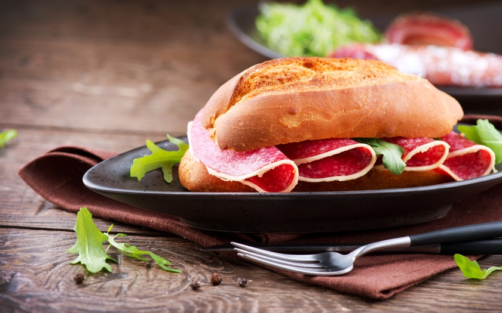

Written by Hector Rodriguez
Updated 07.27.19

Total: 23 mins
Prep: 15 mins
Cook: 8 mins
Yield: 4 sandwiches (4 servings)
In Puerto Rico, jibaro is a reference to the island's rural, agrarian population. However, in Chicago, a jibarito is a unique and original sandwich created by Puerto Rican immigrants at the Borinquen restaurant in Humboldt Park. Today it is served throughout the city.
The distinguishing feature of this sandwich is the replacement of bread with smashed, fried plantains. It's brilliantly delicious and you can add any of your favorite sandwich fixings.
This particular jibarito recipe features roast beef topped with Swiss cheese, lettuce, tomato, and a spiced mayonnaise. You can make these full-sized and enjoy them as a meal or cut the plantains down and build them into small party sandwiches.
-
2 tablespoons oil
-
2 large plantains (green)
-
1/4 cup mayonnaise
-
1/4 teaspoon chili powder
-
1/4 teaspoon cumin powder
-
1/4 teaspoon garlic powder
-
4 handfuls lettuce
-
1 tomato (thinly sliced)
-
1 onion (peeled and cut into slivers)
-
4 slices Swiss cheese (sliced for sandwiches)
-
1/4 pound roast beef (thinly sliced)
-
Garnish: olives
-
-
-
Fry the plantains in oil for 4 minutes. Remove from hot oil and drain on paper towels.
-
Flatten the plantains. Re-fry in the hot oil for another 4 minutes until the plantains are crispy. Remove from the oil and drain on paper towels. Set aside.
-
In a small bowl, mix together the mayonnaise, chili powder, cumin powder, and garlic powder.
-
Spread the mayonnaise mix on one side of the flat plantains.
-
Build your sandwich by layering the tomatoes, onions, cheese, and roast beef, using the flat plantains as if it were bread.
-
Stick a toothpick with olives in the middle of the sandwich. Serve immediately.
Tips
- It is important to use green plantains, as they are firm enough to resemble bread, whereas yellow (and definitely black) would be too soft.
- Ensure the plantain slices are fried until they're nice and crispy and are drained very well, otherwise, you will end up with a greasy mess.
Recipe Variations
- If you scour Chicago's restaurant menus, you will find jibaritos with everything from chicken to shrimp and even vegetarian versions with tofu. Whatever you choose, be sure to top it with a great cheese and the freshest, crispest vegetables you can find.
- Garlic mayonnaise is a popular condiment for jibaritos. It's easy to make at home; simply mix garlic with mayo, salt, and lemon juice, which is a classic aioli recipe.
- You can increase or decrease the size of this recipe to fit your needs. Simply keep in mind that one plantain will make two full sandwiches.